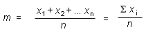
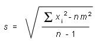

and the standard deviation s of the entire distribution of infinitely many
measurement values of x. (The "standard" symbol for the SD is
the Greek letter s, read: "sigma".)
and the standard deviation s of the entire distribution of infinitely many
measurement values of x. (The "standard" symbol for the SD is
the Greek letter s, read: "sigma".)
In practice, one will have available only a finite set of
measurement values from which to estimate the mean and the standard deviation s of the entire distribution of infinitely many
measurement values of x. (The "standard" symbol for the SD is
the Greek letter s, read: "sigma".)
The sample mean m of n measurement values xi where the subscript i runs from 1 to n is the arithmetic mean
  (1)
(1)
The S is the Greek captial letter sigma, and it means "the sum of all".
The sample mean m is the best estimate of the mean
available from the given finite
sample.
The best estimate s for the standard deviation s, based on the sample from which m is calculated, is given by the following expression.

 (2)
(2)
Expression (2) can be transformed into the following computationally more efficient expression:
  (3)
(3)
Comment. Expressions (2) and (3) for s contain
n - 1 in the denominator. You may have expected to see
n here. However, n - 1 is better because Expressions
(2) and (3) use the sample mean m rather than the true mean
. The deviations of the individual
measurement values xi from the sample mean are
smaller on the average than the deviations from the true mean. One
can prove that the smaller denominator n - 1 corrects for this
exactly.
Page 9 will present an example calculation of s.